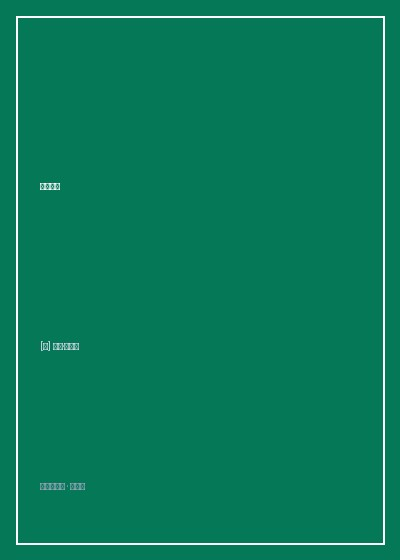

《敏捷革命》

总体观点
传统项目管理‘瀑布模型（Waterfall Model）’是造成全球无数软件与工程项目严重超期、巨额超支乃至彻底烂尾的头号元凶。甘特图所描绘的跨越数年的‘完美计划’本质上是脱离现实的虚幻自欺，因为复杂世界中需求时刻在剧烈变动。萨瑟兰借鉴美军战斗机飞行员OODA环（观察、调整、决策、行动）与丰田精益生产精髓，创立了Scrum敏捷框架，主张‘承认无知、拥抱变化、以短周期高频迭代消除浪费’。
Scrum的运转核心是由极简角色、仪式与工件构成的闭环系统。取消传统的繁复项目经理层级，确立三大纯粹角色：产品负责人（PO，定义‘做什么’与商业优先级）、Scrum主管（Scrum Master，扫清一切外部障碍的仆人式领导）与自组织跨职能开发团队；通过固定时间盒（通常两周的冲刺Sprint）、每日15分钟站会、冲刺评审与冲刺回顾，保证团队时刻处于小步快跑、即时反馈的透明心流状态。
敏捷的深层灵魂是‘以人为本的团队自主性与持续改善（Kaizen）’。萨瑟兰指出，单纯给员工施加高压加班不仅无法提高产出，反而会导致代码错误率指数级飙升、人员离职与士气崩溃；真正的生产力爆发来自于消除多任务并行的注意力和切换损耗、打破职能孤岛，以及在每一次冲刺回顾中勇于直面流程痛点、每次只改进一个关键瓶颈的滚雪球式进化。
核心观点
-
1. 甘特图与完美计划的致命诱惑
管理者热衷于在项目启动前绘制长达上百页、精确到每一天的甘特图计划表。然而统计表明，大型IT项目中超过65%的功能在上线后从未被用户使用过。在未知复杂的领域，越是试图提前锁定所有细节，死得越惨烈。
美国联邦调查局（FBI）耗资1.7亿美元打造的虚拟卷宗档案系统（VCF），历经数年瀑布式开发最终交付了数百万行充斥BUG的不可用代码被迫全盘报废；随后萨瑟兰团队介入采用Scrum，仅用不到原预算十分之一的资金在一年内便成功上线‘哨兵’系统。 -
2. 每日15分钟站立会议的三大质询
站会绝非向下级汇报工作的形式主义汇报会，而是全团队为了对齐当天作战目标的战术协同会。每个人站着开会（防止超时拖沓），只回答三个直截了当的问题：昨天我做了什么？今天我打算做什么？我遇到了什么阻碍？
站会上一旦有成员提出‘服务器申请流程卡在运维部导致代码无法部署’，Scrum Master立即接单介入，负责在当天上午动用协调权限踢开绊脚石，确保开发人员全程专注于核心产出。 -
3. 多任务并行的隐形时间窃贼
心理学实证表明，当一个人同时并行处理两个复杂项目时，脑力切换损耗高达20%；同时处理五个项目时，高达75%的有效工作时间被无谓浪费在上下文切换中。Scrum强制推行‘一次只聚焦一个冲刺目标’的单轨法则。
萨瑟兰展示某软件公司实施改革前后对比：强迫团队砍掉同时推进的七个半拉子项目，集中全部兵力攻坚最重要的一个产品功能，该功能的交付上线周期由原先的八个月神奇缩短至三周。 -
4. 斐波那契数列计划扑克估算
传统用‘小时/天数’预估任务时间往往由于乐观偏见产生巨大偏差。Scrum采用‘故事点（Story Points）’与斐波那契数列（1, 2, 3, 5, 8, 13, 21）进行相对复杂度评估。团队成员同时出牌，差异最大者互相陈述理由，迅速达成群体认知对齐。
当针对一个用户注册功能打分时，一名老员工出2点，一名新员工出13点；新员工指出该模块涉及旧系统繁琐的OAuth认证依赖，老员工恍然大悟重新达成共识，成功提前排查了一处潜伏暗礁。 -
5. 敏捷回顾会议中的‘改善（Kaizen）’仪式
在每个Sprint结束的冲刺回顾会上，严禁对个人进行道德推诿与批斗，而是全体聚焦于‘流程与系统环境的自我净化’。团队必须达成一项共识：在下一个冲刺中，全团队承诺共同改进且仅改进最痛的一项流程缺陷。
回顾会上团队发现代码合并冲突频发导致周五经常熬夜，全员商定‘下一个冲刺强制推行主干开发、每天下午四点集体合代码一次’，仅此一项改进让团队下一冲刺的开发速率提升了30%。
全书结构
-
第1章 世界运转的方式已经出了问题
以FBI巨额信息系统烂尾悲剧与五角大楼武器采购延期为例，控诉传统瀑布模型与甘特图管理的系统性破产，引出Scrum敏捷革命的时代使命。
回顾作者早年在空军驾驶侦察机躲避地空导弹轰炸的生死瞬间，阐释快速敏捷反馈循环在生死绝境中的决定性救命价值。 -
第2章 Scrum的起源：从丰田生产方式到代码世界
追溯大野耐一精益生产消除七大浪费的哲学，结合野中郁次郎《知识创造型企业》的‘橄榄球团队传球冲撞（Scrum）’隐喻，确立敏捷底层逻辑。
详细拆解丰田‘安灯系统（Andon Cord）’：一线装配工人只要发现任何零件瑕疵有权瞬间拉下总开关拉停整条流水线，展示全员自治排障精髓。 -
第3章 团队：卓越团队的自组织奇迹
探讨小规模、跨职能、具备超凡自主性的自组织团队如何构建，分析破除官僚命令链条对激发工程师内在创造激情的魔力。
论证团队最佳规模应当严格限制在3至9人（著名的‘两个披萨原则’），超过9人沟通渠道呈组合爆炸式剧增导致效率断崖下跌。 -
第4章 时间：如何用一半时间完成双倍工作
深入Sprint时间盒设计、每日立会节奏与燃尽图（Burn-Down Chart）可视化跟踪，教授如何通过剔除多任务并行与冗余会议释放充沛时间。
绘制团队两周冲刺燃尽图：从第一天的80点故事点逐步平滑倾斜下降至最后一天归零，展示进度完全可视化带来的掌控感与团队凝聚力。 -
第5章 估算、优先级与产品待办列表（Backlog）
手把手传授产品负责人（PO）如何维护动态调整的Backlog列表，详解80/20法则商业价值排序与计划扑克（Planning Poker）估算法。
演示如何将客户提出的五十条模糊需求，按照‘投资回报率最高、用户最饥渴’原则狠心排定前三项核心MVP，迅速发布推向真实市场检验。 -
第6章 改变世界：超越软件的敏捷革命
总结全书，将Scrum敏捷思想从纯代码软件开发领域外溢推广至学校教育、非营利救援组织、汽车制造乃至家庭日常生活的重构实战。
介绍荷兰一所高中运用Scrum管理学生自主学习化学实验的案例：学生自组团队自主认领学习卡片并主持回顾，高考平均分超越全省名校。